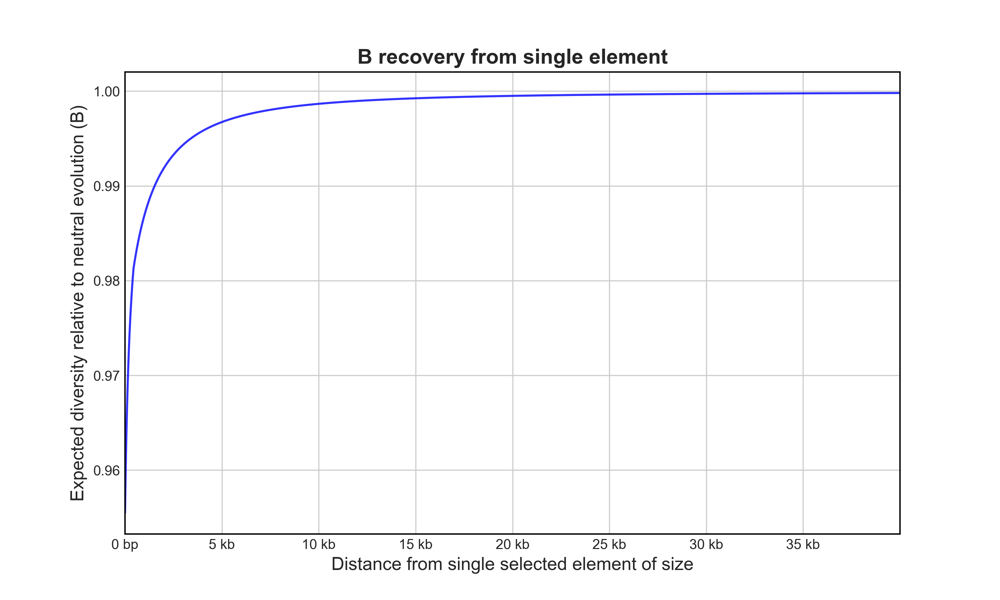
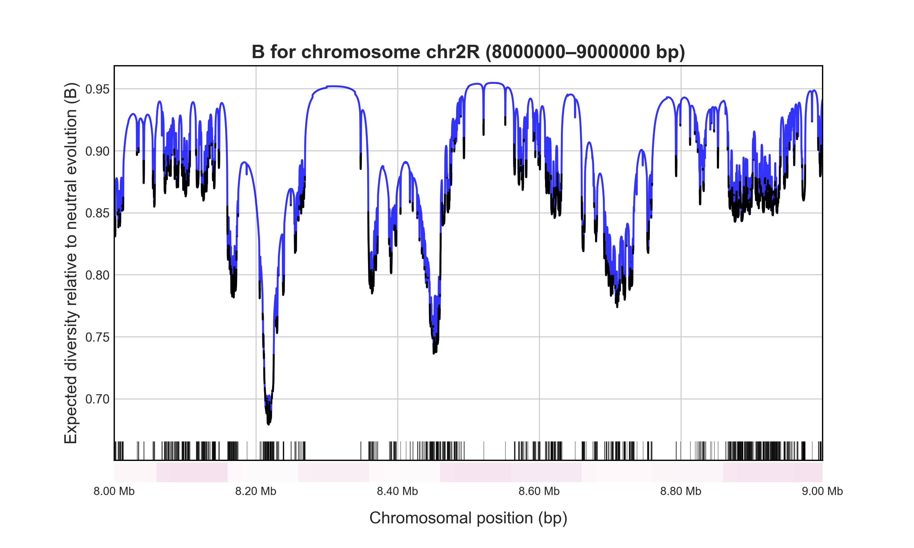

Quickstart Tutorial
This tutorial (5-10 minutes) walks through the core functionality of calculating B with Bvalcalc!
Installation
Bvalcalc is a python program called from the command line (terminal, shell, zsh, bash etc.)
Install Bvalcalc in a new conda environment via conda-forge:
conda create -n bvalcalc -c conda-forge bvalcalc
conda activate bvalcalc
Specifying popgen parameters
To calculate B, we need evolutionary information about the species of the population in a parameters file.
Copy population genetic parameters from one of the templates, e.g. for coding (CDS) regions in Drosophila melanogaster (DroMel).
Bvalcalc --generate_params dromel_cds
# Wrote parameters to: ./DroMel_Cds_Params.py
Open ./DroMel_Cds_Params.py in your text editor of choice. This file contains popgen parameters that allow us to accurately calculate B.
Note
Templates are available for several species and annotation types, see the list at Generate Parameters. When calculating B for a new species or annotation type you’ll need to check the literature and use inferred/informed values for your population, see Tailoring Parameters.
Calculating a B value
Let’s start by calculating B at a site 1kb from the edge of a single conserved element (CDS) 5kb in length.
A conserved element is an annotated part of the genome that experiences direct purifying selection. It will introduce BGS (reduction in B) at sites within and outside the element.
Bvalcalc \
--site \
--params ./DroMel_Cds_Params.py \
--element_size 5000 \
--distance 1000
# B for site 1000bp away from 5000bp region: 0.9868859634102181
The B-value for this site should be printed in the console as ~0.987, which indicates diversity at your focal site is reduced ~1.3% by BGS from the 5kb conserved element.
B recovery from one element
Now, let’s calculate the recovery of B as a function of distance from the 5kb element so we can plot it (gene_B.png).
Bvalcalc \
--gene \
--element_size 5000 \
--params ./DroMel_Cds_Params.py \
--plot gene_B.png
# B for adjacent site: 0.9554782496927732
# Mean B for flanking region: 0.9982138514437486
Have a look at the plot and the results printed to the console, you’ll notice B decays with distance from the selected element. It’s a modest reduction, but remember, across a genome ALL selected elements will contribute to B at any given site.
B in a genomic region
Alright, now let’s look at part of a chromosome. We can use a BED file (or GFF/CSV) that specifies which genomic ranges are conserved to calculate B for a region in the genome. Here we’ll also provide an optional recombination (crossover) map to account for local variation in crossover rates.
First we’ll need to download the sample data, which includes a BED file with CDS annotations and a recombination map for D. melanogaster.
Bvalcalc --download_sample_data
Let’s calculate B for a 1 Mb region in a relatively low recombination region in chromosome 2R and save it to 1Mb_B.png (to save the B-map output to a file, use --out).
Bvalcalc \
--region chr2R:8000000-9000000 \
--params ./DroMel_Cds_Params.py \
--bedgff ./cds_noX.bed \
--rec_map ./dmel_comeron_recmap.csv \
--plot 1Mb_B.png
# Mean B of neutral sites across specified region: 0.8925140916007113
# Plot saved to 1Mb_B.png
# = B value calculated in 6.67 seconds. = = =
Have a look at the plot: the blue sections of the graph indicate neutral regions and black indicates conserved elements (CDS). The white-red gradient reflects the local crossover rate (red = high).
That’s all that’s necessary for many analyses, especially if you’re only interested in B values for a specific region of the genome, or are testing against simulated results.
Note
The recombination map directly scales the crossover rate r.
You could also add a gene conversion map with --gc_map but as the gc rate is relatively constant in D. melanogaster (Comeron et al. 2012), you can calculate a reasonably accurate map without it.
Calculating a B-map
If you wanted to generate a complete B-map for all sites across all chromosomes you would use the following command, though note it’s a lot more data to crunch and maps are already available for Drosophila so no need to run it!
Bvalcalc \
--genome \
--params ./DroMel_Cds_Params.py \
--bedgff ./cds_noX.bed \
--rec_map ./dmel_comeron_recmap.csv \
--out Dmel_Bmap.csv \
--out_binsize 1000
If you had run that command, you’d get a B-map for sites due to BGS from CDS regions. It’s also possible to include the contribution of BGS from non-coding regions using Bvalcalc (see Multiple DFEs).
Note
B-maps are useful to identify highly conserved regions of the genome, as a null-model for inference, e.g. SweepFinder2 with B-map, or to select the most neutrally-evolving sites for e.g. demographic inference, see Demographic Inference with B-map.